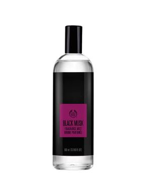
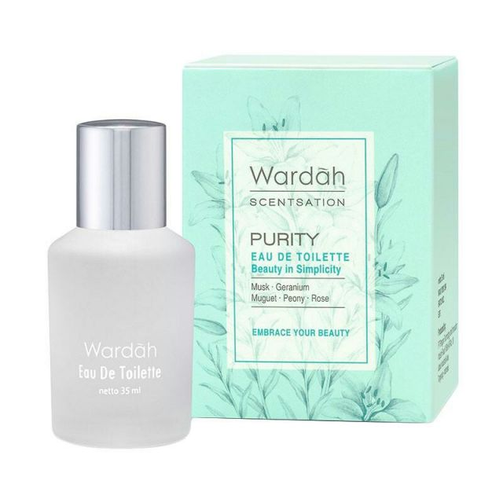
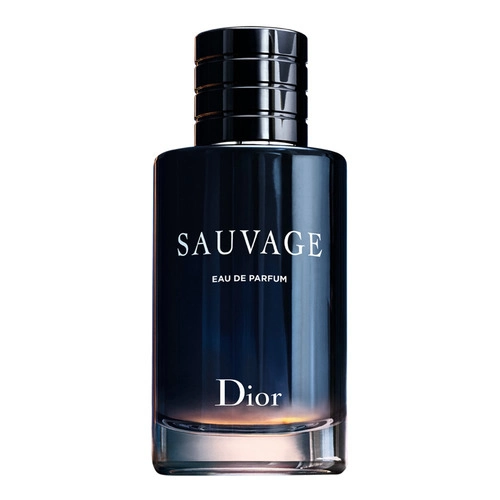

1. Eau De Cologne
Eau de Cologne (Splash Cologne/Cologne/Body Splash) adalah jenis wewangian yang punya kadar konsentrat wangi hanya 5% dan sisanya adalah kadar air dan alkohol, maka tidak heran kalau wewangian jenis ini hanya bertahan 2 - 3 jam saja guys!. Ini cocok banget dipakai kalau cuman mau jalan2 bentar aja, kayak nge-mall atau kegiatan lain. Jadi cocok banget bagi orang yang suka semprot srat srot atau semprot berulang kali. Tapi ada juga lho EDC yang tahan lama misalnya dari merk The Body Shop. Contoh wewangian jenis ini adalah : Bellagio Rave Culture, The Body Shop Black Musk Body Mist, Wardah Flame Lux Body Mist
2. Eau De Toilette
Eau de Toilette adalah jenis wewangian yang punya kadar konsentrat wangi hanya 5 - 15% dan sisanya adalah kadar air dan alkohol. Wanginya cukup tahan lama, dikisaran 4 - 6 jam. EDT sering direkomendasikan para reviewer parfum karena daya tahannya yang cukup lumayan. EDT cocok digunakan untuk ngantor, ngampus, dan kegiatan lain dengan durasi yang cukup moderate. Contoh wewangian jenis ini adalah : Bellagio Rave Culture Eau de Toilette, The Body Shop Black Musk Eau De Toilette, Wardah Purity Eau De Toilette
3. Eau De Parfume
Eau de Parfume adalah wewangian yang memiliki konsentrat wangi 15 - 20%. Biasanya harganya mahal, namun ketahannya cukup luar biasa yaitu mulai dari 12 jam hingga seharian. EDP biasanya digunakan untuk acara - acara formal yang kegiatannya berlangsung lama. Contoh wewangian jenis ini adalah : Christian Dior Sauvage EDP, Chanel No. 5 EDP, Tere de Hermes EDP